DC702 CTF - Write Up
By Omar Essilfie-Quaye
The CTF
I was recently able to attend a Capture The Flag (CTF) event run by DC702 and C2Soc. It was a relatively short CTF for beginners and and experts alike. I had 4 hours to capture as many flags as possible or be forever known as a newb. JK the organizers were amazing and were walking around and checking in on everybody to make sure they were having fun and throwing cheeky hints in here and there. These hints were much appreciated as I am definitely a n00b.
One thing that was made clear right at the start was that this was a short CTF and at all times the goal was to stay on task. This was a crucial theme across some of the challenges and if you were not paying attention it could have been easy to fall into a few traps.
The CTFs were split into a few sections, I focused on some of the reverse engineering based ones and my team mates did some of the others. In the interest of education I will share some of my solutions to the puzzles that I found the most fun. I will not be sharing the final flags to respect the integrity of any future DC702 events.
For useful CTF tools online explore the CyberChef website. It has almost everything you can think of in terms of quick little tools to help get things done. I do try and use local tooling where possible at CTF's in case there is unreliable network connections, but if you ever need a cyber Swiss army knife this is the place to look.
- The Summoning Ritual - 80 Points
This CTF has a fairly simple aim to get the flag from the python script summoning_ritual.py. There are a quite a few functions in the script which I gave a quick glance to understand roughly how they work on my way down to the main function. At the time the checksum function stood out so I was mentally preparing to come back to this when needed.
def display_banner():
def calculate_checksum(data):
"""Mysterious encryption function for data integrity"""
def validate_incantation(user_input):
"""The sacred cipher - DO NOT MODIFY - DELETE AFTER DEBUG"""
def initialize_ritual_components():
"""Setup the ancient digital components"""
A more detailed inspection of the main function shown below led me to realise a few things:
- The user input is taken in, capitalised and a checksum calculated. But this checksum is not saved in any variable and does not need to be analysed.
- The validate_incantation() function is the main function of importance.
- The flag is basically the user input wrapped in curly braces as per the standard format in most CTFs.
def main():
...
try:
user_input = input().strip().upper()
...
calculate_checksum(user_input)
...
if validate_incantation(user_input):
...
print(f"The spirits whisper: 'flag{{{user_input}}}'")
print("\nCongratulations! You have found the magic word!")
else:
...
A refocus on the validate_incantation() function very quickly reveals that the sacred_word variable is the required input for the python script to get the flag.
def validate_incantation(user_input):
"""The sacred cipher - DO NOT MODIFY - DELETE AFTER DEBUG"""
sacred_word = "CTF-REDACTED-THE-SACRED-WORD-TO-GET-THE-FLAG-REDACTED-CTF"
if len(user_input) != len(sacred_word):
return False
for i in range(len(sacred_word)):
if user_input[i] != sacred_word[i]:
return False
return True
The first flag and the lesson is already being made clear. Stay on task! Don't waste time looking at things which don't get you to the flag. It would have been very easy to waste a lot of time trying to reverse the calculate_checksum() function. I was lucky that I decided to get an overall understanding of the control flow of the script before getting drawn down a rabbit hole with zero benefit.

- Nohty P - 100 Points
This flag is similar to the summoning ritual but has a slightly increased difficulty. In this case the flag isn't directly in the python script and you have to understand how python works a little bit to figure out the puzzle.
def validate(c, i):
if (i == 0 or i == 9) and c == "t":
return True
if (i == 1) and (ord(c) == 104):
return True
if (i == 2) and (c == "secure"[4]):
return True
if (i == 3 or i == 4) and (c == chr(ord("g")-2)):
return True
if i in [5,6,7,8,9]:
if c == "tniop"[::-1][i-5]:
return True
if i in range(10,21):
doot = base64.b64decode("MWZvdXIxZml2ZTk=".encode("ascii")).decode("ascii")
if c == doot[i - 10]:
return True
if i in range(21, 31):
if c == "GANGALF-TON-"[::-1][i-21]:
return True
return False
The crux of the problem is the validate character function which takes in a character and an index and checks if the character is correct. Manually going through the first few quickly reveals a pattern, the number pi. The flag is the first few digits of pi in an alternating pattern back and forth as numbers and words. I was able to use the expected length of the password to figure out at what point to stop and plugging it in to the script revealed the flag.

There was another lovely clue there with the file name for the python script being "its_pithon.py". That should have been a giveaway but that was a small clue I missed that could have saved me some time. If you want to do the CTF slightly faster than me you can automate checking each password character with a quick python script. I generated a flag-gen.py script after the CTF was over.
- RE-Versing - 125 Points
A binary (changed using hexedit to give a different flag to the original) reversing challenge with no instructions just the binary. Before running the binary I ran the file command against the binary to check what type of binary I was looking at. I had an unstripped 64-bit ELF, this meant I should be expecting to see lots of symbols available and possible code comments when running strings or objdump.
$ file re-versing
re-versing: ELF 64-bit LSB pie executable, x86-64, version 1 (SYSV),
dynamically linked, interpreter /lib64/ld-linux-x86-64.so.2,
BuildID[sha1]=0a46ad920eed87ad3f2039fd7539b02d7a3ed487, for GNU/Linux 3.2.0,
not stripped
My first attempt to obtain the flag involved running the strings command against the binary. I was hoping to find the raw flag in the output of this command but scrolling up and down quickly showed that this was not the case. I decided to grep the output for curly braces to save time looking for possible flag candidates. The output from this command is shown below.
$ strings re-versing | grep {
u{UH
^(D|6)(C|1)7\{[R-V]E(g|p)u(l*)ar(z?)_R[T-F]v3Rs(s*)i(n|j)g_6{3}\}
This output from the grep shows what could have been a flag regular expression. Solving for any valid input for this regular expression creates a valid flag. I was able to test possible match strings on regex101.com. Given that some of the groups of the RegEx had ranges of possible values it was clear that you had to find the correct value within the range. As you solved the RegEx the expected word becomes clear very quickly. Once solved I ran the binary with my guess to confirm the flag.
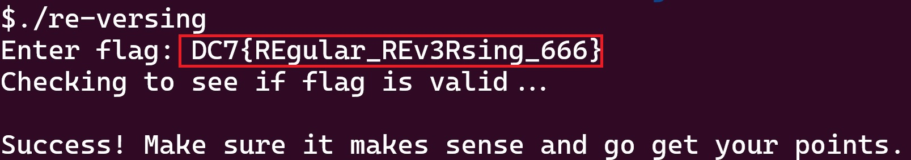
- Tesla Cybertruck Infotainment - 150 Points
This challenge involves reverse engineering a C source file, cybertruck.c. The instructions tell you about the cyber truck infotainment system and that there is a secret mode. The first step enter the matrix...
...
#define HIDDEN_OPTION (4500 * 3)
...
int main() {
...
switch (choice) {
case 1:
handle_climate();
break;
case 2:
handle_media();
break;
case 3:
handle_navigation();
break;
case 4:
handle_settings();
break;
case 5:
handle_charging();
break;
default:
if (choice == HIDDEN_OPTION) {
process_special_mode();
} else {
printf("\nInvalid option. Please try again.\n");
}
break;
...
}
Having a look at the main function it can be seen that to enter the special mode a secret number needs to be entered. A quick CTRL + F shows that the HIDDEN_OPTION is defined at the top of the source file. The value of the HIDDEN_OPTION is 13500. Entering this mode shows the start of a diagnostic mode which requires authentication. This occurs in the process_special_mode() function.
void process_special_mode() {
char sys_str1[BUFFER_SIZE];
char sys_str2[BUFFER_SIZE];
char sys_str3[BUFFER_SIZE];
get_system_strings(sys_str1, sys_str2, sys_str3);
...
if (calculate_checksum(input) == 2661) {
...
printf("FLAG: %s\n", sys_str1);
...
}
}
The important sections of the process_special_mode() function are shown above. The value of the flag is stored in sys_str1! I considered spending time reversing the calculate_checksum() function but I realised that the core goal of the challenge is to obtain the flag and that bypassing the checksum would be a quicker way to getting the flag. During the CTF I copied the code within the get_system_strings() function and all the dependencies into the flag-gen.c, and ran it. This printed the flag to the console without wasting time on unnecessary reversing.
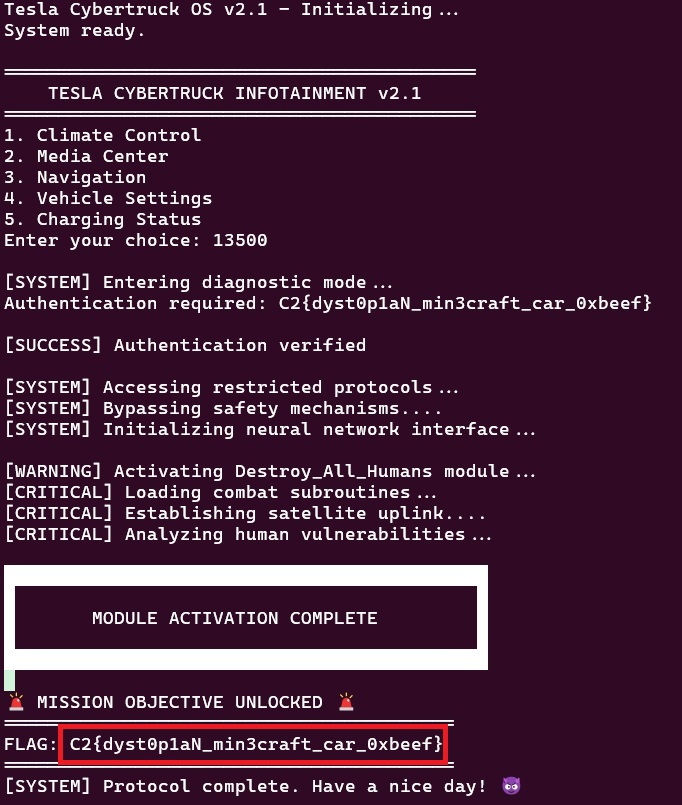
Post CTF I realised there are a few other ways of obtaining the flag:
- If C is not your favoured programming language you can copy the essential parts of the algorithm to flag-gen.py.
- As you have the source code for the challenge you can patch the if statement to true which completely removes the checksum. As the source prints the flag upon success this will reveal the flag without having to write your own scripts.
- If you are feeling particularly technical you can attach a debugger to the binary and set a breakpoint at the if statement. You can then print the value sys_str1 as it is already in memory at that point.
- The last option is to try using the angr tool to try and automate getting the correct checksum value. I generated a quick checksum-validation.py script and I do not believe it is possible to obtain a checksum of 2661 using printable ascii characters. I used a simple greedy bin packing approach to try and get the checksum value of 2661 and it never calculated a solution. I might be wrong and using angr to double check is probably a sensible test.
GDB Debugger
I just briefly got bored and thought I would try the debugger variant to make sure i remember how to use GDB. Make sure to compile the cybertruck source code with debug symbols before running in GDB by using the flag "-ggdb".
$ g++ -ggdb cybertruck.c -o cybertruck
$ gdb cybertruck
(gdb) break process_special_mode
(gdb) run
It took me a minute to figure out why there was no useful information in the local symbols when I first reached the breakpoint. Of course the debugger had paused execution before any operations happened in the function so the local variables all had garbage data in them. I stepped forward using next a few times and once I had gone passed the get_system_strings() function I had a look at the local variables and saw the flag hiding in sys_str1 as expected.
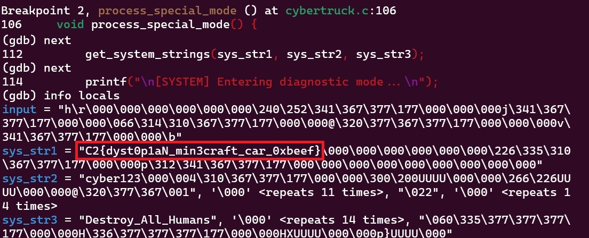
- Fizz Buzz - 100 Points
A CTF spin on the classic fizz buzz challenge. For all number from 1 to 1024 inclusive do the following:
- Print "fizz" if the number is divisible by 3
- Print "buzz" if the number is divisible by 7
- Print "fizzbuzz" if the number is divisible by 3 and 7
Make a comma separated string of the previous statements. Ensure that there are no spaces and no newline characters. Reverse the string and find the MD5 Hash of the string. The hash is the flag for this challenge and the instructions clear denote that this is a non standard flag format.
This is a rather simple challenge and once the string has been generated it can be hashed with an online tool such as MD5HashGenerator.com . I chose to put everything in a generate_hash.py python script to generate the hash I needed and quickly iterate through any mistakes. The quick mistakes I made included: not checking the inclusivity of the problem statement, leaving a trailing comma in the string and forgetting to reverse the string.
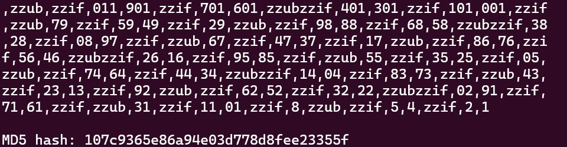
- Tell Tale Heart - 100 Points
The premise if simple, you are given two copies of a file. Use them to find the flag. The two files you are given are copy_1.pdf and copy_2.pdf. These files contain the short story "The Tell Tale Heart" by Edgar Allen Poe. A quick glance shows no visual difference between the files which led me to check if there were any differences in the file data. I ran the diff command as shown below against the two files.
$ diff copy_1.pdf copy_2.pdf
The output of the diff command can be seen in the image below. It looks like some data has been removed from copy_1.pdf. The format of the data looks like a hex representation of characters.
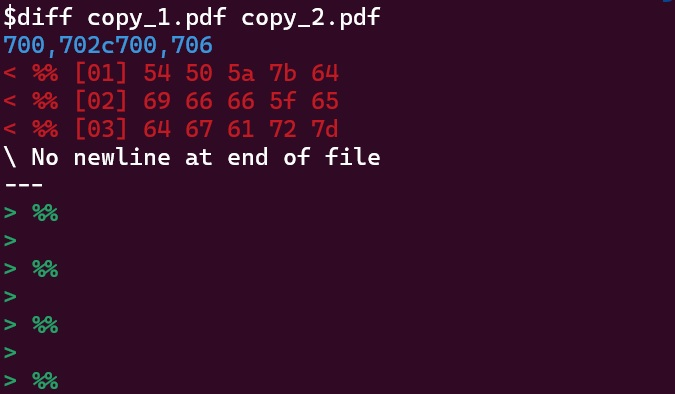
I piped the output of diff into a file diff.txt and I cleaned up the excess characters diff-clean.txt. You can then take this clean data and run it through the "from Hex" recipe on cyberChef. This should reveal the flag.
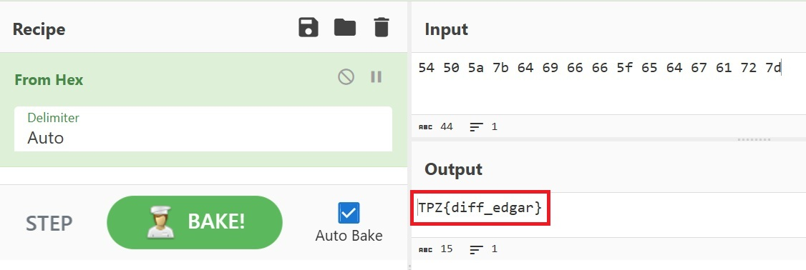
If you want to do the conversion from hex yourself you can use the python "bytes.fromhex()" function. The usage of this can be seen in flag-gen.py. The output of the flag generation python script can be seen below.
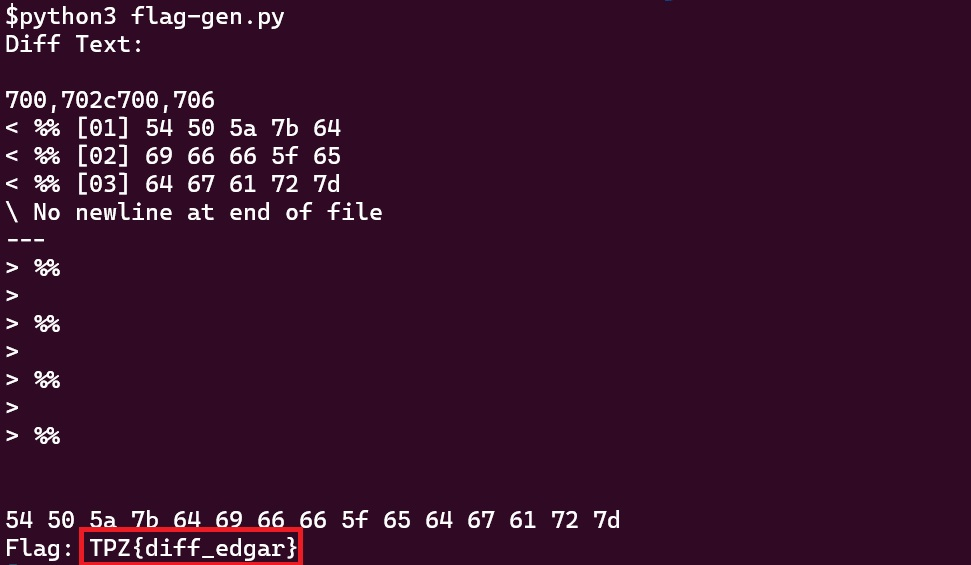
If you want to try a command line only solution you can use xxd to convert the data from hex to ascii.
$ xxd -r diff-clean.txt
TPZ{diff_edgar}
- Secret Checker - Post CTF
This is also a relatively easy python reverse engineering challenge. Take the python file secret_checker.py and see if you can get the flag. The important sections of this script are shown below.
ka = ['x120', 'm120', 'a-1', 'a-103', 'x36', ...
...
def check_secret(secret):
max = 100
if (len(secret) * 2) + 18 > max:
return False
base = f"{0.1 + 0.2:.100f}"[18:18 + len(secret)*2]
base = [int(base[i:i+2]) for i in range(0, len(base), 2)]
p = list(map(decode, base, ka))
return "".join(p) == secret
def main():
secret = sys.argv[1]
if check_secret(secret):
print(f"Correct! Secret is {secret}")
else:
print("WRONG!")
The check for the flag is done in the check_secret() function. Looking at this function may be intimidating however there are a few things of interest. Base and ka are invariant for every program execution so the execution of the decode function will always create the same output. The comparison in the check_secret() function is done on the user input and the decoded ka variable. This means if patch the script to print the p variable just before the function returns you will be given the value of the flag.
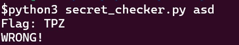
This patch to the script is extremely valuable and saves you from having to reverse the calculations of the base or decoding calculations. The initial output from trying this is shown below. It can be seen that the output is dependent on the length of the user input. The entire flag is only revealed if the input longer than the length of the flag. If the input is too long then the check_secret() function will return early preventing this patch from revealing the secret.
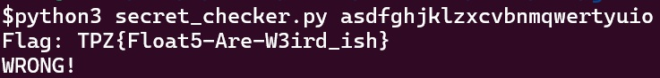
Once again the key is to stay on task. I got drawn into the complexities of the decoding function which was not needed and this prevented me from completing this challenge in the last few minutes of the CTF.
- Witches Brew - Post CTF
CTF Readme: Three witches gathered around their cauldron, each adding a secret ingredient to their magical brew . Each witch added an ingredient to the pot. What are these chefs cooking up?
Hint: Remember use 'Magic' whenever possible.
This one stumped me during the CTF as no matter what I tried to decode the data in python I just kept getting nonsensical data out. At no point did I try more than 2 decoding techniques at once. After the CTF I was playing around with cyber chef when I noticed the Magic recipe under the flow control menu option. I tried this and still got data that didn't make a lot of sense but it was much shorter so it felt promising. I noticed that there was a depth option so I changed this from the default of 3 to 5 to see what would happen and the flag popped out.
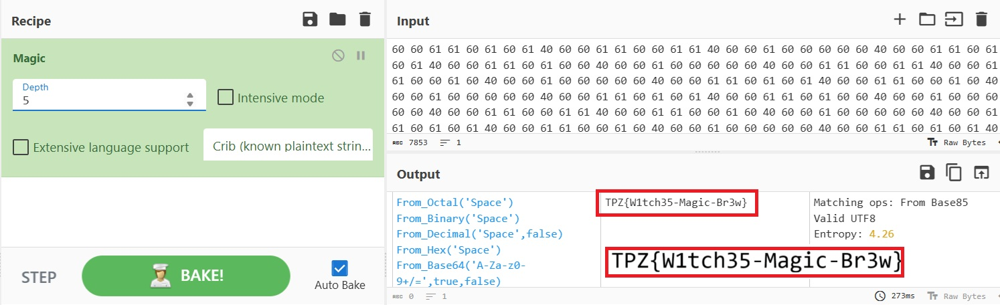
- Mystery Window - Post CTF
The mystery window challenge is a forensic challenge revolving around extracting data from an image of a mystery-window.jpg. Sadly opening the image didn't reveal the flag.
{kind=link}
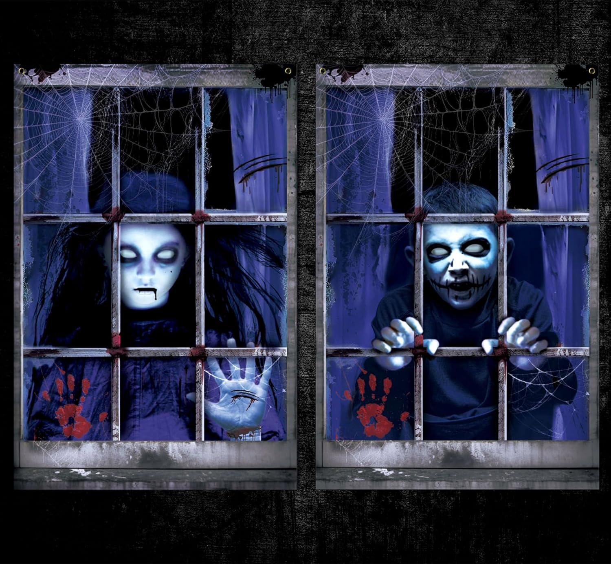
My first thought was to see if there was any Exif data in the image. Running the exif command against the file shows that there is either no exif data or it is corrupt. Given that I didn't want to write an exif reader to figure out if the possibly corrupt data might have a flag hidden within it I moved on.
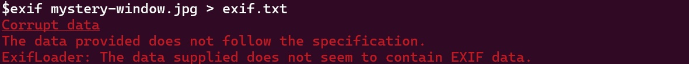
Next I ran the file command against the image just to confirm it was what I thought it was. I probably should have done this first but I don't think I learned anything from this as I had already opened the file in an image viewer so I knew it was a valid image file.
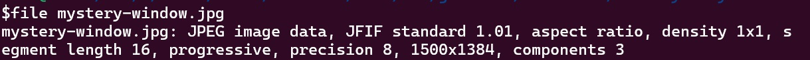
Before expending energy down some more expensive steganography techniques I thought I would check if there were any other files hiding in the image file. I ran the binwalk command on the file to see if there was any hope in this direction. It seems that there is a second image file hiding at 0x43660 after the first image.
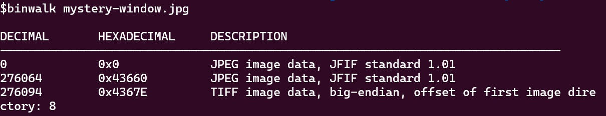
$binwalk --dd=".*" mystery-window.jpg
$ls _mystery-window.jpg.extracted/
0* 43660* 4367E*
$file _mystery-window.jpg.extracted/*
0: JPEG image data, JFIF standard 1.01, aspect ratio, density 1x1,
segment length 16, progressive, precision 8, 1500x1384, components 3
43660: JPEG image data, JFIF standard 1.01, resolution (DPI), density
144x144, segment length 16, Exif Standard: [TIFF image data, big-endian,
direntries=1, orientation=upper-left], baseline, precision 8, 1500x1384,
components 3
4367E: TIFF image data, big-endian, direntries=1, orientation=upper-left
$mv _mystery-window.jpg.extracted/43660 _mystery-window.jpg.extracted/43660.jpg
I used binwalk again to extract all of the recognised files from the image. This places them all into an extracted image folder. The files are named after their address in the original file but they are not named with the correct file extension. I relabelled the file at 0x43660 as a jpeg and opened it up. At the bottom of the image is the flag.
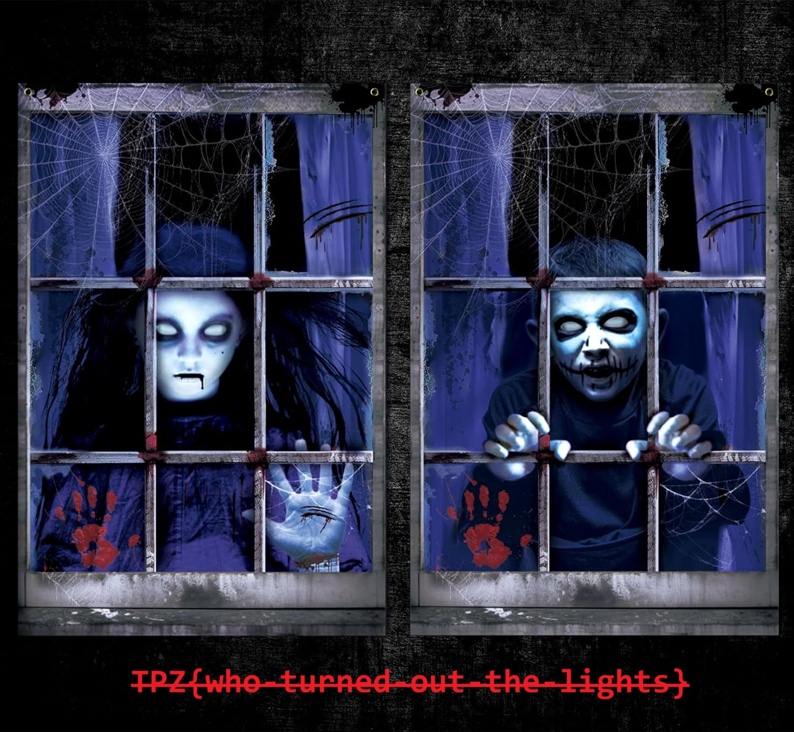
If you want to skip all of the effort of trying command line tools you can use cyber chef to expedite some of the work. The image below shows how cyber chef can extract the image file in a similar manner to using binwalk.
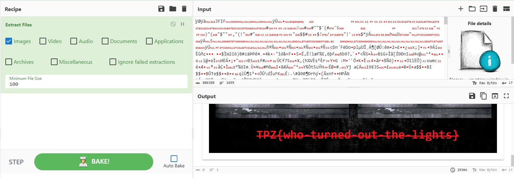
- Easy Does It - Post CTF
This was a nice and easy one. The one line readme is as follows: Just something easy to get started with. "P2{bu-gur-zntvpny-ebgngvba-bs-13}"
This one is pretty obviously a ROT13 cipher. One of the clues that hints at this is that the numbers and special characters are seemingly unchanged. ROT13 only rotates letters by 13, shifting back around to the start of the alphabet if it overflows. This leaves all other characters unchanged. Additionally because each repeating section of plain text is changed to cipher text in the same way each time it is susceptible to "known plain text" and "frequency analysis" attacks.
Known plain text attacks revolve around using known sequences of plain text to decode how a cipher is working. Common words such as "the", "of", "and" are good examples of this. For the ROT13 cipher specifically the word "the" becomes "gur" in the cipher text. Therefore seeing the word "gur" in the cipher text could be a quick clue that you are looking at a ROT13 cipher. Whilst the Enigma machine used by the Germans in World War 2 was not as simple as a ROT13 cipher, it did fall due to relaxations in operational security from the signallers. Usage of common phrases such as "Heil Hitler" or the German word for "Weather" in the same place in every message helped the analysts at Bletchley Park to crack Enigma.
Frequency analysis takes a large portion of cipher text and analyses the number of times each letter occurs. If patterns emerge where some letters are more common than others it may be able to translate that into the expected distribution for the language. For example in English the letters "e", "t" and "a" are the most commonly seen in text. Checkout the hangman project to see a letter frequency graph for the English language. It should be noted that if the length of the cipher text is not long enough (like with this flag) then a frequency analysis attack may not work. Although this can be bypassed with the harvest now decrypt later paradigm. This allows an attacker to obtain enough cipher text to try a frequency analysis attack.
The quick way to get the flag using cyber chef can be seen below. If you want to do it yourself checkout the flag-gen.py which uses the codecs library to perform the ROT13 operation.
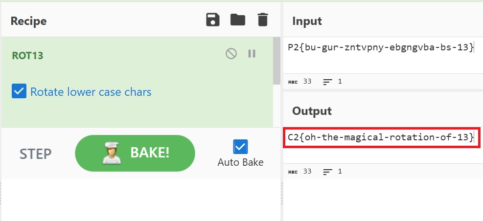

Tanks

Snowman